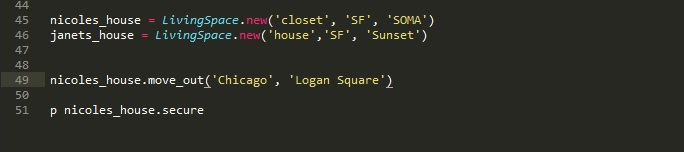
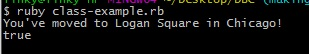

Ruby Classes10-14-2015
Let's say that you want to define a class LivingSpace. The first thing you'll want to do is write an initialize method for our class.
There are some variables that have been established in the initialize. These variables are traits that every 'Living Space' has- type of living space, city and neighborhood that the living space is located in, how many bedrooms and bathrooms the living space has, and how many roommates you have.
As you can see, the initialize method takes three inputs type, city, and neighborhood. So when the user calls a new instance of LivingSpace they should input three strings, one to describe the type of the LivingSpace as well as the city and neighborhood of the LivingSpace.
Now, you probably don't just want to make new instances of the LivingSpace class. What if you wanted to move, add a roommate, or add a bathroom to our LivingSpace? You can add a few more methods to perform these functions and change the traits of LivingSpace accordingly.

In the above picture, four new methods move_out, new_rommate, resize, and secure have been created. Now that we have more than one method in our class, let's talk about instance variables. Up until now, you've probably just used local variables. Local Variables are variables that are defined within the scope of a single method. This means that if you want to define a variable in the intialize method and then use it in the resize method, you can't use a local variable that's been defined in initialize but not in resize. In order to use the variables across mulitple methods within the class, you have to use an instance variable. Instance variables always start with an @ before the variable name (e.g. @type, @bed, @alarm, etc.). Instance variables can be used in any method within the class. As the name would suggest, instance variables can be redefined for every instance of the variable.

As you can see above, you can use the LivingSpace class to create two different objects (Nicole's House and Janet's House) with two different sets of traits.
In order to use class methods, you call it in the same way you've been calling methods ('object name'.'method').
With those method calls, you'll see:
